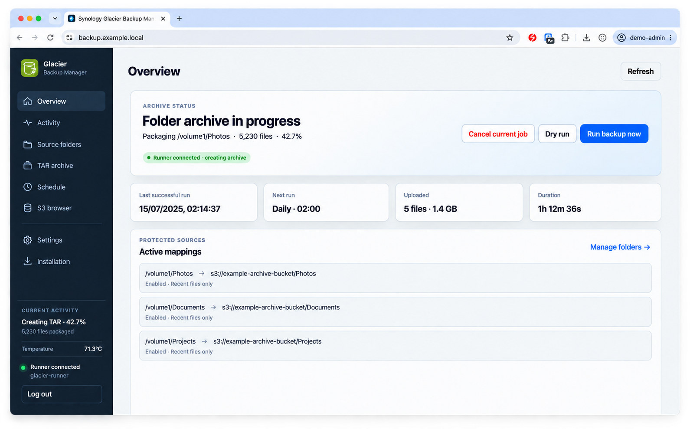
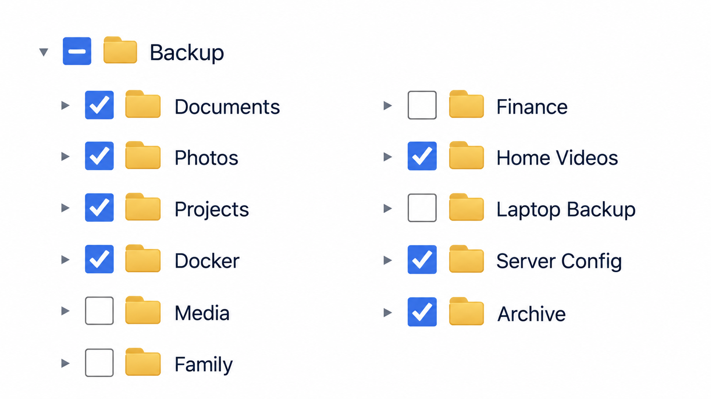
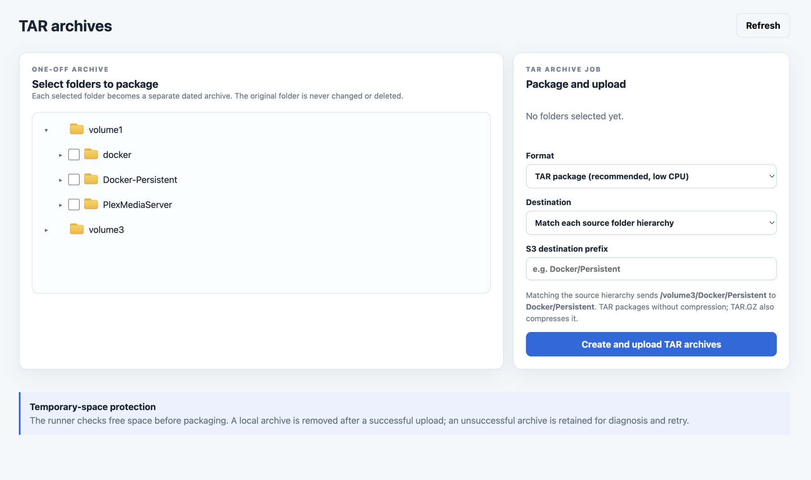
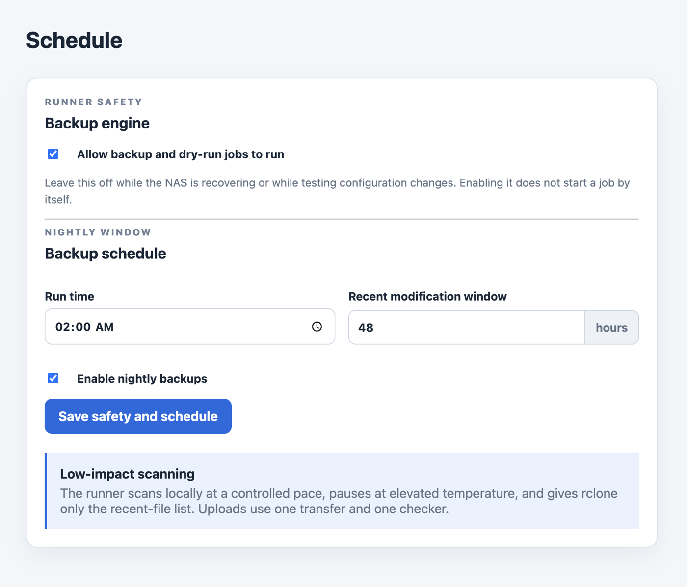
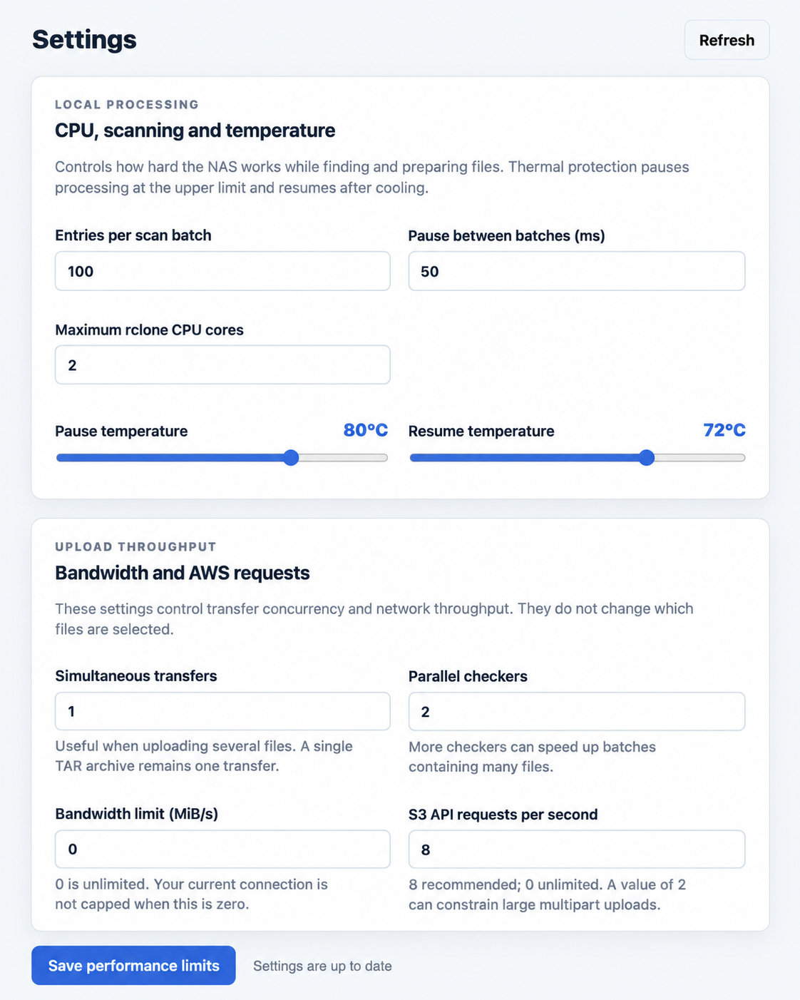
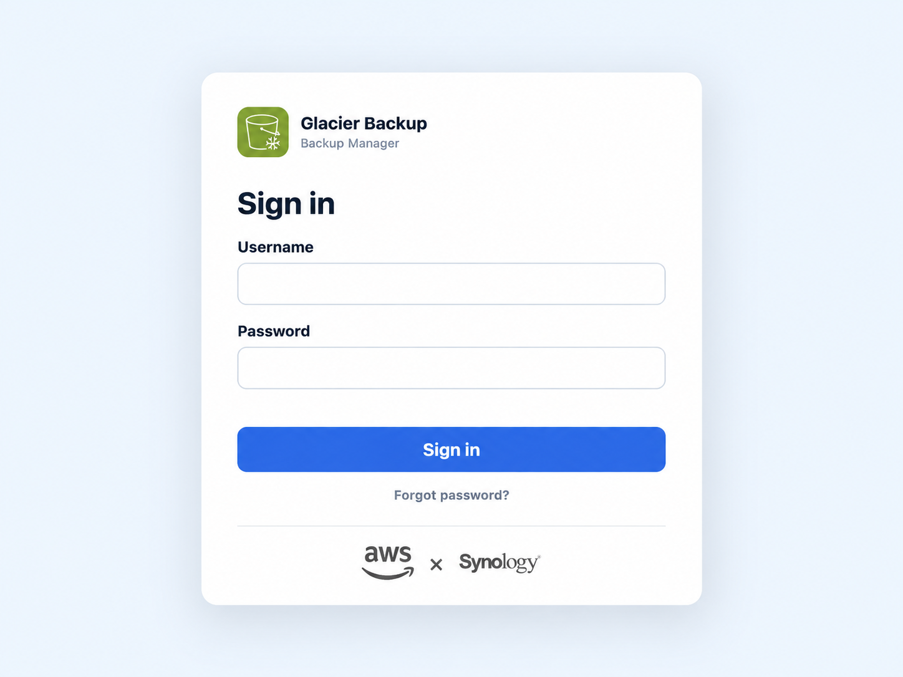
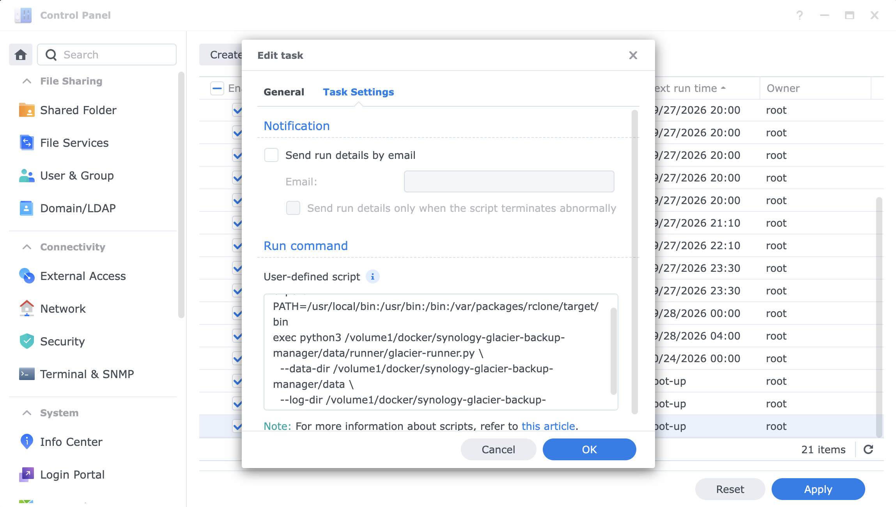

Connect S3
Connect an rclone remote to your S3 bucket.
SYNOLOGY → S3 GLACIER DEEP ARCHIVE
A simple, self-hosted interface for choosing what to back up, previewing jobs and sending files to Amazon S3.

Synology Cloud Sync can generate a large number of S3 requests when checking a big NAS.
rclone is more efficient, but managing folders and exclusions from the command line can be cumbersome.
Glacier Backup Manager adds a simple interface on top: choose your folders, preview the job and run it.
Connect an rclone remote to your S3 bucket.
Select exactly what should be backed up or excluded.
Preview with a dry run, then run immediately or on a schedule.
Your S3 lifecycle rule moves uploaded files into Glacier Deep Archive.
Choose only the folders you want to protect. Exclude individual subfolders and preview everything before uploading.


Package folders as dated TAR or TAR.GZ archives before uploading them.
This is useful for folders containing lots of small files.
Choose when backups run and how far back the recent-file scan should look.
Scheduled and manual jobs can be paused without deleting your setup.

Limit scan speed, CPU usage, bandwidth and AWS request rates.
You can also set a temperature limit so backups pause while the NAS cools.

Tell the installer how your Synology is set up. It will generate the container configuration and DSM runner command for you.
/volume1/docker/synology-glacier-backup-manager with data and logs subfolders.glacier-backup-manager./volume1/docker/synology-glacier-backup-manager with data and logs subfolders.glacier-backup-manager and select that folder as the project path.The selected source volumes are mounted read-only. Only the manager’s data and log folders are writable.
After Portainer finishes building the stack, open http://your-nas:8787. Create the local administrator account, then leave the backup engine paused until the test upload is verified.

Open Control Panel → Task Scheduler. Create a Triggered Task → User-defined script, run it as your dedicated backup user and set the event to Boot-up.
Run the task manually once after installation. Then add one harmless folder, run a dry run, upload one uniquely named test file and confirm it appears in S3.
Read the full installation reference →
Glacier Backup Manager is self-hosted software, not a managed backup service. You remain responsible for your AWS account, NAS access, lifecycle rules and restores.
Administrator passwords must meet minimum security requirements and are stored as salted PBKDF2-SHA256 hashes.
Sessions use HttpOnly cookies, SameSite protection and CSRF tokens. Login attempts are rate-limited.
Stored AWS secrets are not displayed in the web interface and are passed securely to rclone when required.
Backups use copy operations only. Glacier Backup Manager does not expose remote delete or destructive sync commands.
Complete these AWS safeguards before relying on Glacier Backup Manager.
Glacier Backup Manager uploads files to S3. AWS then needs a lifecycle rule to move them into Glacier Deep Archive.
Create an AWS Budget so unexpected storage, request or restore costs do not go unnoticed.
Worth knowing: S3 lifecycle rules do not normally transition objects smaller than 128 KB by default. Glacier Deep Archive also has a 180-day minimum storage period and restores are not immediate. For folders containing many small files, TAR archives can reduce the number of objects stored.